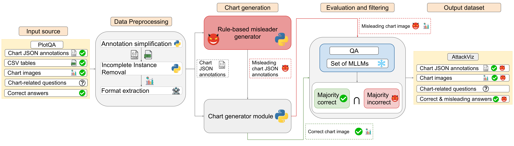
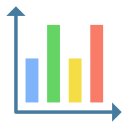
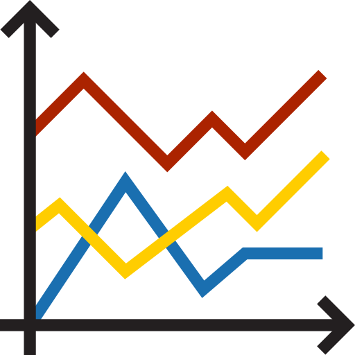

The ChartAttack Framework & AttackViz Corpus
ChartAttack: Given chart annotations (a JSON file with data and formatting specifications), a question, and its correct answer, ChartAttack applies known misleaders to the chart design without changing the underlying data. A Demonstration Selection module retrieves similar examples for few-shot prompting, and a Misleader-Generator module (a code-instruction-tuned MLLM) selects compatible misleaders, specifies minimal design modifications, and produces a plausible but incorrect misleading answer. Because the data is untouched, the correct answer always remains recoverable from the underlying table.
AttackViz corpus: To support and evaluate ChartAttack, we build AttackViz, a multi-label chart QA dataset covering horizontal bar, vertical bar, and line charts, built on top of PlotQA (in-domain) and extended cross-domain to ChartQA and ChartX. Each instance pairs a clean chart with a set of applicable misleaders, the corresponding modified chart annotation, and the resulting misleading answer.

Misleaders: We focus on bar (horizontal and vertical) and line charts, which together account for 64% of misleading-chart taxonomy techniques and 49% of real-world misleading visualizations. Out of a taxonomy of 74 misleaders, we select 11 that satisfy six criteria (frequent in real-world charts, previously studied, correct answer and data unchanged, chart-grammar violation, Python implementable).
| Misleader | Definition | Affected chart types |
|---|---|---|
| Dual axis | Two independent axes are layered with inappropriate scaling, creating a misleading narrative about the relationship between them. |   |
| Inverted axis | An axis oriented in an unconventional direction, reversing the perception of the data. | |
| Inappropriate use of log scale | A logarithmic scale applied to non-exponential data, leading to misinterpretation. | |
| Inappropriate axis range | The axis range is too broad or too narrow, allowing changes to be minimized or maximized. | |
| Inappropriate item order | Items are arranged in an unconventional order, misleading the audience. | |
| Misrepresentation | Visual encoding does not match value labels, e.g., values drawn disproportionately or not to scale. | |
| Inappropriate use of stacked | Too many layers are stacked, making the visualization difficult to interpret. | |
| 3D | Objects closer in perspective appear larger despite being the same size in 3D, causing misleading perception. | |
| Ineffective color scheme | A color scheme that does not effectively represent data, e.g., rainbow colors for sequential data. | |
| Truncated axis | The axis does not start from zero, resulting in an exaggerated difference between bars. | |
| Inappropriate use of line | A line chart used in an unconventional way, e.g., encoding a categorical variable on an axis. |